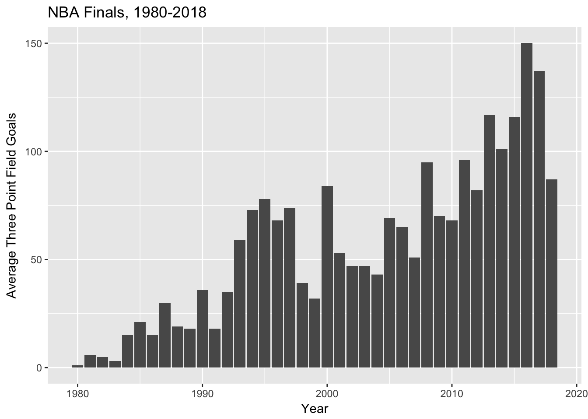
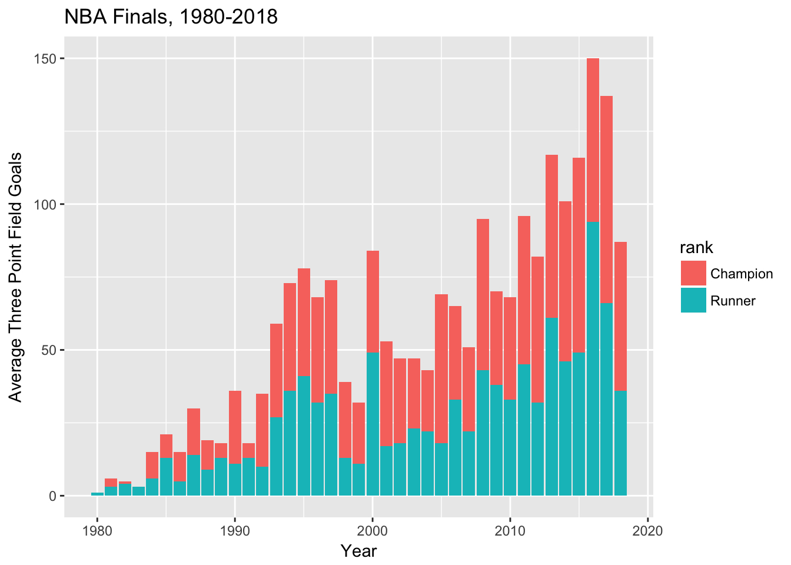
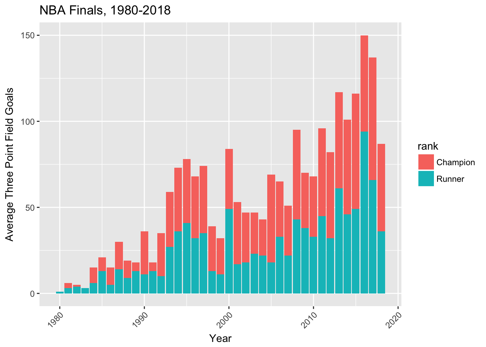
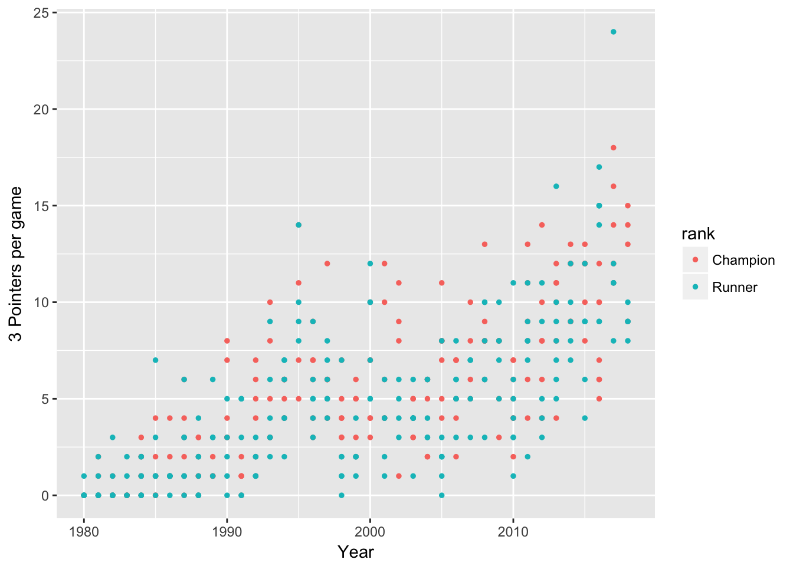
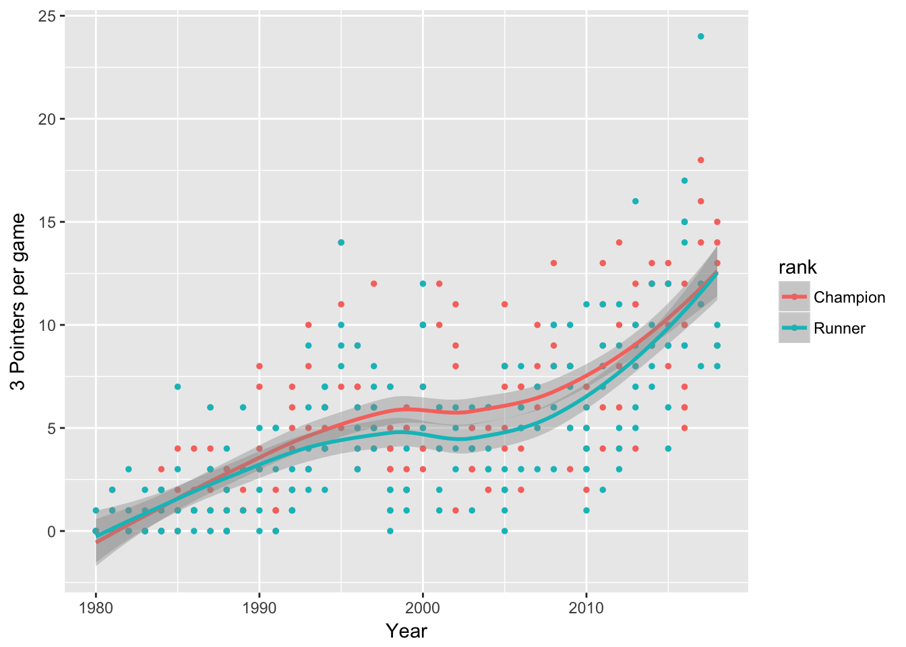

Course 7: Data Visualization
Exercise 1: Visualizing NBA Finals Data
In this exercise we will work with NBA final teams stats on Kaggle. We have used this data before in the ?? course. There is two .csv files. The ‘champs.csv’ file contains game-by-game team totals for the championship team from every finals game between 1980 and 2017. The ‘runnerups.csv’ contains game-by-game team totals for the runner-up team from every finals game between 1980 and 2017. The 1980 NBA Finals was the first Finals series since the NBA added the three point line.
This exercise is inpired by two kernells on Kaggle that can be found here and here. Ask your stduent to download the data on Kaggle or on our Github repository for this guide.
In order to download data on Kaggle, students are required to create a Kaggle account. They can do so by linking their Google account.
The first step is to import the data into R. Since importing .csv files is in a future lesson, tell your students the commands the need to import the .csv files. We are going to use read_csv command from the readr package. Ask them to save the two files in two separate objects. Here we called them champs and runners. Like before, we will tidy the data a bit to fix the team name issues and converting the columns Win and Home to factors.
knitr::opts_chunk$set(echo = TRUE)
library(tidyverse)
# importing the data
champs <- read_csv(file = "./data/nba/championsdata.csv")## Parsed with column specification:
## cols(
## .default = col_integer(),
## Team = col_character(),
## FGP = col_double(),
## TPP = col_double(),
## FTP = col_double()
## )## See spec(...) for full column specifications.runners <- read_csv(file = "./data/nba/runnerupsdata.csv")## Parsed with column specification:
## cols(
## .default = col_integer(),
## Team = col_character(),
## FGP = col_double(),
## TPP = col_double(),
## FTP = col_double()
## )
## See spec(...) for full column specifications.# fix the heat and warriors
champs <- champs %>%
mutate(Team = ifelse(Team == "Warriorrs","Warriors",Team)) %>%
mutate(Team = ifelse(Team == "'Heat'","Heat",Team)) %>%
mutate(Win = as.factor(Win)) %>%
mutate(Home = as.factor(Home))
runners <- runners %>%
mutate(Team = ifelse(Team == "Warriorrs","Warriors",Team)) %>%
mutate(Team = ifelse(Team == "'Heat'","Heat",Team)) %>%
mutate(Win = as.factor(Win)) %>%
mutate(Home = as.factor(Home))
## bind the two data sets together
## and add a column that shows champions vs. runnerups call it rank
allteams <- bind_rows("Champion" = champs, "Runner" = runners, .id = "rank")After importing and wrangling the data, ask your students to figure out whether champion teams are likely to score more at home or away. Ask them to write the code in a pipe and present the table using the knitr package.
## loading the knitr package
library(knitr)
## does home has an advantage
allteams %>%
## first filtering so we only look at champion teams
filter(rank == "Champion") %>%
## grouping by the variable home
group_by(Home) %>%
## calculating the average of points scored
summarise(avg = mean(PTS)) %>%
## presenting the table using the knitr package
kable("html")| Home | avg |
|---|---|
| 0 | 98.21101 |
| 1 | 103.31532 |
Ask your students what this means. To make the table above make more sense, ask your students to use the appropriate function for changing factor levels so that the column Home is equal to Home if its value is 1 and is equal to Away if its value is 0. Your students should use the function fct_recode() in order to do that. Now they know that champion teams on average score 98.2 points at away games and 103.3 points at home games.
## loading the knitr package
library(knitr)
## does home has an advantage
allteams %>%
## first filtering so we only look at champion teams
filter(rank == "Champion") %>%
## changing factor levels so they mean better
mutate(Home = fct_recode(Home, Home = "1", Away = "0")) %>%
## grouping by the variable home
group_by(Home) %>%
## calculating the average of points scored
summarise(avg = mean(PTS)) %>%
## presenting the table using the knitr package
kable("html")| Home | avg |
|---|---|
| Away | 98.21101 |
| Home | 103.31532 |
Now, we are going to do some data visualization using the package ggplot2. Ask them to first find the column that contains the three point field goals from the data guide. The column is TP. Then ask them to show the average number of three points per year using a bar plot. Note that they will have to use the geom_bar() function from the ggplot2 package. Ask them to use the title “NBA Finals, 1980-2018” as the title of the graph and “Average Three Point Field Goals” as the label for the Y axis. Note that they will have to use the argument stat = 'identity' inside the geom_bar() function.
ggplot(data = allteams, aes(x = Year, y = TP)) +
geom_bar(stat = 'identity') +
ggtitle("NBA Finals, 1980-2018") +
ylab('Average Three Point Field Goals') 
Now, ask them two repeat the pervious graph but this time, have the bar plot (with different colors) for champion and runner up teams. In other words, they will have to use the argument fill and make it equal to the newly created column rank. Then ask them to interpret the graph. What is obvious is that champion teams do a much better job at three-pointers.
p <- ggplot(data = allteams, aes(x = Year, y = TP, fill = rank)) +
geom_bar(stat = 'identity') +
ggtitle("NBA Finals, 1980-2018") +
ylab('Average Three Point Field Goals')
p
Now, ask them to find the right function in ggplot2 that makes the Y axix ticks (the years) with an angle (45 degrees). They will have to use the theme() argument and inside it they will have to use the element_text() function to specify the angle.
p + theme(axis.text.x = element_text(angle=45, hjust = 1, vjust = 1))
In the last exercises, we are going to work with scatter plots. Ask your students have a scatter plot with number of 3 pointers per game on the vertical axis and year on the horizontal axis. Note that the two columns they need to use are TP and Year. Ask them to have two different colors for champions and runner ups. Ask them to make the point sizes equal to 1.
p2 = ggplot(data = allteams, aes(x = Year, y = TP, color = rank)) +
geom_point(size = 1) +
ylab('3 Pointers per game')
p2
Your students are now required to use the geom_smooth() function from the ggplot2 package. This function help your students in seeing patterns. This is an example of the geom_smooth() function.
geom_smooth() function, linear approximation
When using geom_smooth(), the argument method has to be specified otherwise its default value will be used. Ask your students to set method as 'loess'). The shaded areas around the lines are the confidence intervals which can be disabled by using the argument se = FALSE.
geom_smooth() and stat_smooth() are effectively aliases: they both use the same arguments. Use stat_smooth() if you want to display the results with a non-standard geom. Ask students what the two lines suggest? What is the trend over time?
p2 + geom_smooth(method = 'loess')